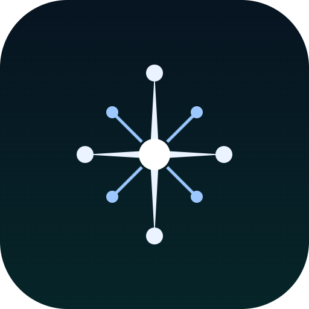

The four diffraction spikes are connections that end in units; the four diagonals are a second layer of smaller units around the core. At 32 px the diagonals drop their lines and the mark still reads: one bright core, four spikes, eight units.

64-unit grid. Two tapered diamonds (the spikes), four tip units r 2.8, four diagonal units r 2 on 1-unit lines, core r 5.2. Vertical spike 54 units, horizontal 46 — the slight asymmetry of a real diffraction pattern.
Drawn, not typeset: a 1.7-unit monoline on a 20-unit cap height, wide tracking. The A has no crossbar — a single unit sits where it would be.
#04080E ground · #06171C teal core
#EAF3FF light · #9CC8FF blue
#6FE0DC cyan, sparingly
day: #F4F6F9 · #0B1B2B · #1D58B8